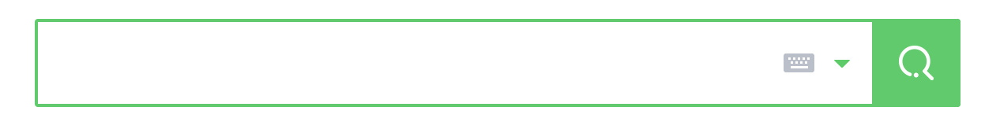
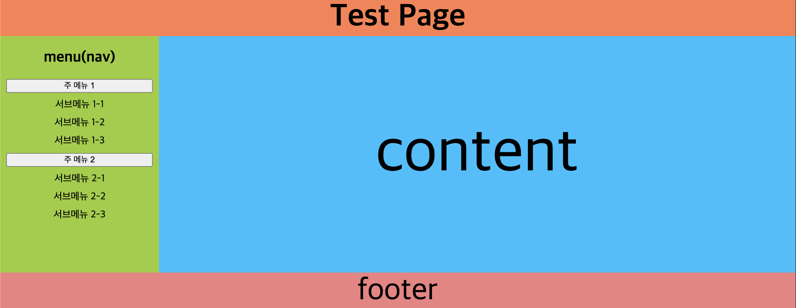

Main Menu
웹 접근성 측면에서의 메뉴!
▶️ 메인메뉴 (Main Menu)
웹에서 메인메뉴는 사이트의 어느 한 부분으로 이동할 수 있도록 하며, 사이트의 전반적인 내용을 파악할 수 있다. 혹은 사이트내에서 내가 어느 위치에 있는지를 알 수 있다 따라서 웹을 이용하는 사람들이 모두 잘 이용할 수 있도록 웹접근성이 좋아야 한다
▷ 웹 접근성이란?
고령자, 장애인, 비장애인에 상관없이 모든 사람이 동등하게 접근 가능하도록 하는 것을 말한다
만약 시각이 불편한 사람이 웹을 이용하는 경우 스크린리더에 의지해 원하는 동작을 수행하게 될 것이다. 이때 시각이 불편한 사람도 웹애서 원하는 동작을 수행하는데 어려움이 없도록 스크린리더가 보다 정확하고 명확하게 정보를 전달하는 등의 기능을 하도록 해야 한다
어느 포털사이트의 검색창이다 시각이 불편한 사람이라면 이 요소가 검색하는 부분인지를 전혀 알 수 없다 하지만 이 포털사이트에서 검색창을 구성한 코드를 살펴보게 되면 사용자에게는 보여지지 않지만 검색이라고 표기를 해두고 스크린리더가 인식할 수 있게끔 작성해두었다

<!-- 화면에는 보이지 않는 태그 -->
<span class="blind">검색</span>
<!-- 검색 돋보기 아이콘 -->
<span class="ico_search_submit"></span>
▷ WAI-ARIA
(Web Accessibility Initiative - Accessible Rich Internet Application)
웹을 이용하는 사람들이 증가함에 따라 여러 사람들이 웹을 이용하게 되었고 몸이 불편한 더 많은 사람들이 웹을 이용할 수 있도록 동적 웹 애플리케이션의 접근성을 보장해줄 수 있다 해당 요소의 역할, 동작 등을 명시해줌으로써 보다 명시적으로 웹을 이용할 수 있도록 한다 (html만으로는 부족한 웹 접근성을 보완, W3C에서 만듬)
최근에 과제를 진행하면서 체크박스의 css를 변경해야할 일이 있었다.
당시에는 웹 접근성에 대한 지식이 거의 없다시피했기 때문에 label을 사용해서 checkbox를 display: none으로 두어 보이지 않도록 하고, 내가 원하는 모양대로 lable의 css를 변경한 적이 있다.
하지만 지금 생각해보면 웹 접근성을 위한 배려가 전혀 되있지 않은 코드를 작성했다고 생각한다 스크린리더를 이용하는 사람이 해당 부분을 접하게 되었다면 이건 lable이라는 요소일뿐 checkbox인지 어떤 역할을 하는지 lable이라면 무엇을 가르키는지에 대한 명시가 전혀 존재하지 않았다
이럴때 ARIA를 이용할 수 있다 ARIA를 이용하면 해당 요소가 어떻게 작동되는지를 명시해줄 수 있다 예를 들어 role="checkbox"라고 속성으로 추가해주게 되면 이 속성이 checkbox처럼 동작함을 브라우저에게 알려줄 수 있다 이외에도 대표적으로 다음과 같은 역할을 수행한다
| Role | UI에 포함된 특정 element의 기능을 정의 |
| Property | 해당 컴포넌트의 특징이나 상황을 정의하며 속성명으로 ‘aria-*‘라는 접두사를 사용 |
| State | 해당 컴퓨넌트의 상태 정보를 정의 |
- WAI-ARIA를 이용해서 해당 요소의 동작을 정의하거나, 상황 밑 상태가 어떤지를 명시적으로 알려준다
이와 같은 방법들 또는 다른 방법들을 활용해서 웹 접근성을 높인 메인 메뉴를 작성하는 것이 좋다는 생각을 한다
먼저 보통의 메뉴를 보게 되면 <ul>, <li>를 이용해서 메뉴를 작성하게 된다 이때 시멘틱적으로 메뉴를 <nav> 태그로 감싸는데 이는 검색엔진 최적화에도 도움이 된다 브라우저들이 데이터를 수집할 때 해당 부분이 navigator 역할을 한다는 것을 알려주게 되면 검색엔진이 데이터를 수집할 때 효율적으로 할 수 있고, 스크린리더를 이용하는 사용자들도 해당 요소가 어느역할을 할지 간략하게 알 수 있다.
<nav> 태그로 메뉴부분을 감싸주고, 보이지 않는 (screen leader only)의 제목을 작성해주면 웹을 사용하기 어려운 사람들도 현재 부분이 “메뉴의 역할을 하는구나!” 라고 알 수 있을 것이다
시멘틱태그를 이용해서 해당 부분이 어떤 부분인지 큰 대목으로 알 수 있다면 이전에 말한 aria-*를 이용해서 사용자가 원할하게 웹을 이용할 수 있도록 해줄 수 있다(시멘틱 요소와 role, aria를 혼용해서 사용하는 것은 좋지 않다)
메가 메뉴(메뉴가 굉장히 많은 드롭다운식의 메뉴)를 이용할 때 해달 요소에 마우스를 hover하거나, click해야 주메뉴 아래의 서브메뉴들을 확인할 수 있다 이때 서브메뉴를 열 수 있도록 하는 요소에 aria-label="submenu-open"와 같이 해당 요소가 어떤 역할을 하는지 알려주는 것이 좋다
<body>
<div class="container">
<header>
<h1>Test Page</h1>
</header>
<nav>
<h2 class="screen-leader-only">menu(nav)</h2>
<ul>
<li>
<button aria-label="submenu-open">주 메뉴 1</button>
<ul>
<li aria-label="submenu"><a>서브메뉴 1-1</a></li>
<li aria-label="submenu"><a>서브메뉴 1-2</a></li>
<li aria-label="submenu"><a>서브메뉴 1-3</a></li>
</ul>
</li>
<li>
<button aria-label="submenu-open">주 메뉴 2</button>
<ul>
<li aria-label="submenu"><a>서브메뉴 2-1</a></li>
<li aria-label="submenu"><a>서브메뉴 2-2</a></li>
<li aria-label="submenu"><a>서브메뉴 2-3</a></li>
</ul>
</li>
</ul>
</nav>
<main> content </main>
<footer> footer</footer>
</div>
</body>

위 코드를 보면 시멘틱 요소(<header>, <nav>, <main>, <footer>)를 이용해서 각 요소를 명시적으로 표현하고 주메뉴 하나 하나를 구성하는 요소(자바스크립트로 드롭다운 구현)를 button 태그로 작성했다 이때 이 button이 무슨 역할을 하는지 알 수 없는 상황이 있다. 이때 aria-label을 이용해서 브라우저가 이 태그가 무엇을 하는지 사용자에게 알려줄 수 있다
aria-label: 레이블로 사용할 문자열을 지정할 수 있다 (aria-label이 해당 요소의 텍스트보다 우선시됨)aria-labelledby: 자신을 참조하는 요소를 가르킨다aria-describedby: 기능을 설명하는 요소를 가르킨다(자신을 설명하는 lable을 가르킨다)